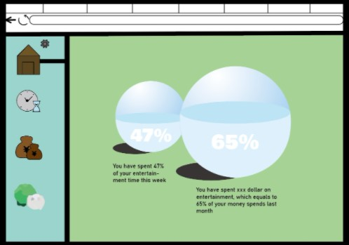
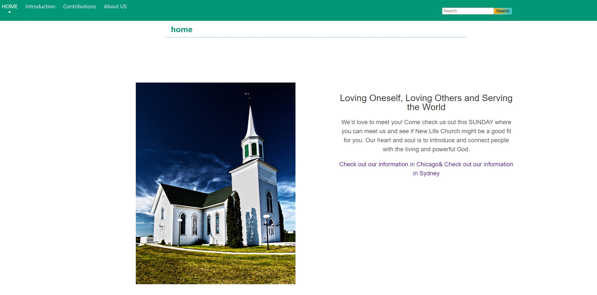
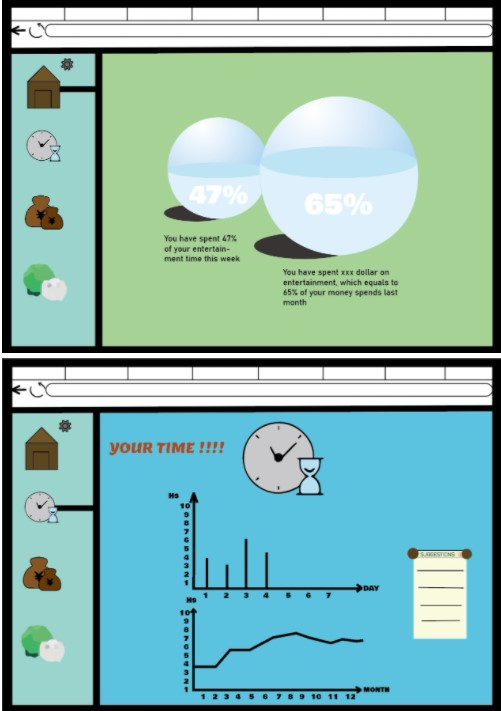
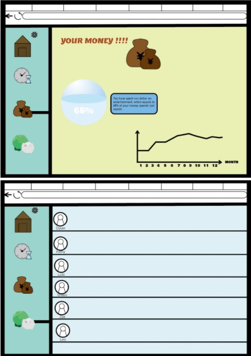
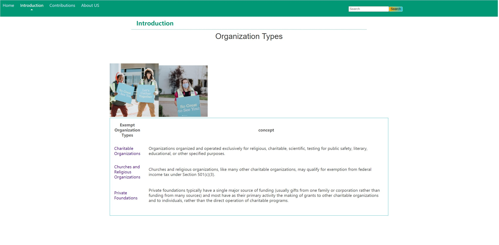
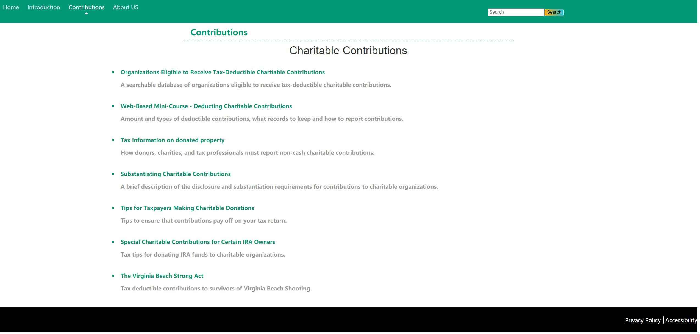
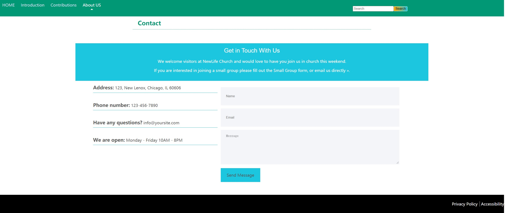
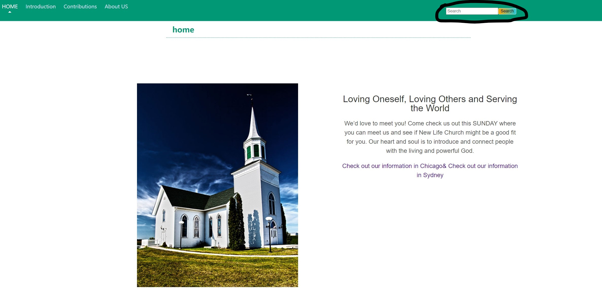

Reflection on Proposal
In the web proposal I misundertood the brief and created my own website intead of propose a web for an existing charity organization, therefore, I worked on a charity organization for the web prototype and extract some design elements from the previous proposal
Iteration
I continued the main color scheme in the previous proposal to present a pleasant atmosphere in the new website，the new website mainly uses cyan and white to show the healthy and relaxed style of the website
 I changed the use of different icons to enter different pages, and use the simple describtion of different pages to take the place of the icons.
    interactivity
In the web prototype, in order to make it easier for our users to learn what they want to know, a search engine was added to acheive the goal.
Also our users can sent thier imformation to us if they are interested in joining a small group of ours by filling out a form and click the 'send message' button.
Design patterns and principles
1:White and cyan color matching, giving the website a modern and uncluttered look.
2:Let users have a physical understanding of NEW LIFE church, and make connection with target audience.
3：Grid based layouts arrange content into sections,which leads to a better looking website design.
4:“F” Pattern design. Eye tracking studies have identified that people scan computer screens in an “F” pattern. Most of what people see is in the top and left of the screen and the right side of the screen is rarely seen.
Reference
Newlife Church [Photo]. Retrieved from: https://www.instagram.com/p/CFXyC9zn6YW/
Newlife Church Sydney. (2020). Retrieved November 27, 202020, from：http://newlifesydney.org/
Newlife Church Chicago. (2020). Retrieved November 27, 202020, from：https://north.newlifechurch.org/
IRS. (2020). Retrieved November 27, 202020, from：https://www.irs.gov/charities-non-profits/charitable-organizations
IRS. (2020). Retrieved November 27, 202020, from：https://www.irs.gov/charities-non-profits/churches-religious-organizations
IRS. (2020). Retrieved November 27, 202020, from：https://www.irs.gov/charities-non-profits/charitable-organizations/private-foundations